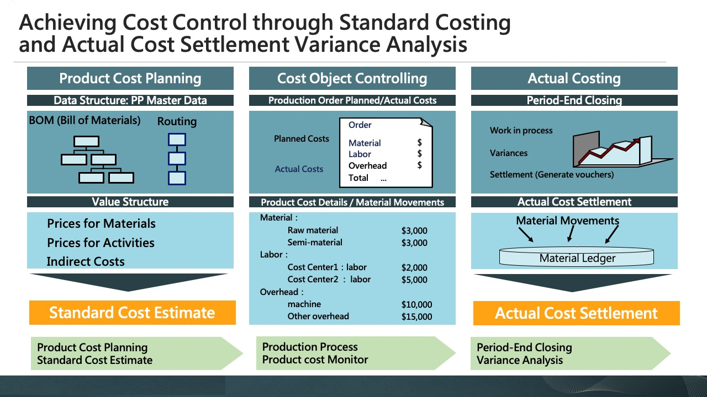
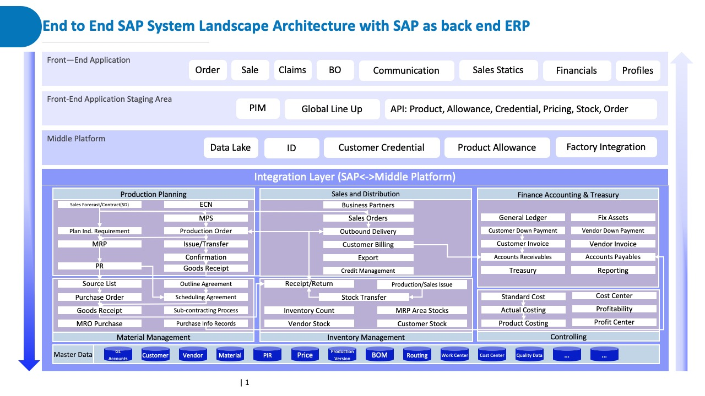

Overview
As an SAP consultant at IBM, I spent three years designing and delivering end-to-end ERP and system configuration for global manufacturing clients. My work centered around bridging complex business needs with scalable SAP systems—driving greater operational clarity, financial accuracy, and data transparency.
Key Capabilities
• Ensure accurate, timely, and actionable cost information that supports strategic decision-making, operational control, and financial transparency. • Translate business requirements into SAP CO configurations across cost center accounting, internal orders, and profitability analysis (CO-OM, CO-PA, CO-PC). • Design and implement allocation logic to ensure accurate cost distribution across departments, plants, or products.

Product-Level OPEX Allocation for Chemical Industry
- Challenge
-
Two subsidiaries of a global chemical manufacturer lacked visibility into operating profit by product category. • All operating expenses—including marketing, and administrative costs—were booked at the company-code level. • Management couldn’t identify the profitability of products, resulting in inefficient resource allocation. • Controllers adjusted monthly P&L reports by product group offline, which was time-consuming and error-prone.
- How I contibuted
-
• Reorganized the SAP profit center structure to reflect key product categories. • Configured allocation cycles using assessment and distribution methods in SAP CO. • Generated balance sheet and income statement reports using SAP standard report tools, ensuring that both legal and management reporting reflected the new allocation structure.
- Impact
-
Enabled Product-Level Profitability Visibility : Structured SAP CO profit center and cost center hierarchy to reflect product categories, allowing management to accurately assess the performance of each product line. Increased Accuracy and Reduced Manual Effort : Automated OPEX allocation using SAP standard tools, eliminating Excel-based workarounds and reducing reporting adjustments by 70%. Improved Financial Transparency and Reporting : Delivered audit-ready balance sheets and financial statements with aligned internal structures, supporting better budgeting and pricing decisions across regions.
SAP cut-over & intergration project for Apple's FATP
- Challenge
-
• The acquiring group’s cost allocation model differed substantially, particularly in how shared costs and indirect expenses were handled. • Key CO master data objects such as activity types, cost element groups, and statistical key figures were incompatible or incomplete. • Differences in controlling area settings created configuration and data consistency issues during the transition.
- How I contibuted
-
• Reconfigured controlling area settings, versioning, and fiscal year variants to match the operational and compliance needs of the new entity. • Rebuilt allocation cycles using appropriate drivers to reflect local business practices and accounting principles. • Collaborated with IT teams to ensure alignment between operational costing expectations and SAP logic.
- Impact
-
🔄 Successfully transitioned over 215 cost centers and profit centers to the new SAP architecture ⚙️ Reduced manual adjustments by aligning allocation logic before cutover 🤝 Facilitated smooth coordination between the OEM, and technical teams to ensure a stable transition

- 🔷 End-to-End SAP System Integration: From Configuration to Front-End Enablement
-
Beyond functional understanding, I was deeply involved in the technical configuration of SAP modules such as CO, MM, and SD, as well as mapping master data, defining cost structures, and supporting interfaces with external applications through middle platforms (e.g., Data Lake, APIs, Factory Integration). My experience also extends to bridging SAP and front-end applications, enabling order visibility, financial insights, and customer-level reporting through aligned system logic and clean data integration. Whether supporting MRP logic, sales forecasting, or P&L reporting, I ensure the back-end system supports real business needs across the value chain.